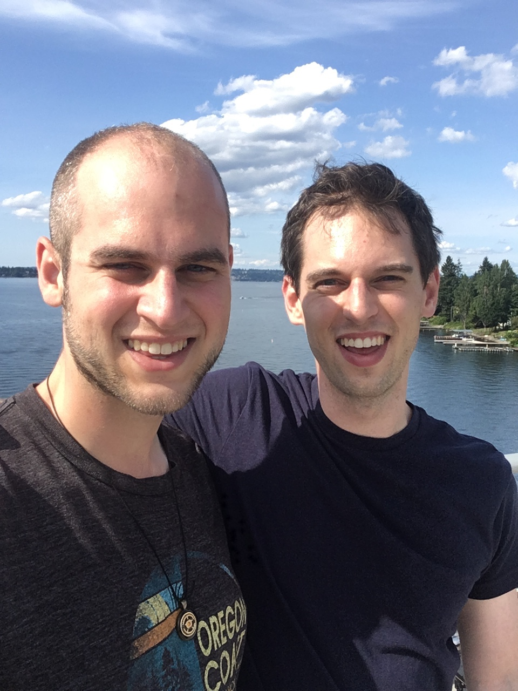

Nathaniel Bottman
last name -- usc.edu

|

|
Nathaniel Bottmanlast name -- usc.edu |
|
|---|
Welcome! I am an Assistant Professor (non-tenure track; postdoctoral position) at the University of Southern California.
From July 1, 2019 through June 30, 2022, I am partially supported by NSF Standard Grant DMS-1906220, whose project description you can find here.
I study symplectic geometry. My research aims to relate Fukaya categories of different symplectic manifolds. Have a look at my vita! You can also look at my thesis; §2 resp. §3 became papers 3 resp. 4 below, but §1 contains some structural comments on the symplectic \((A_\infty,2)\)-category that have not appeared elsewhere.
We show that the 2-associahedra are Eulerian lattices, by exploiting their recursive structure.
10: The 2-associahedra are Eulerian lattices (2019). Nathaniel Bottman, Dylan Mavrides**.
For \(r \geq 1\) and \(\mathbf{n} \in
\mathbb{Z}_{\geq0}^r\setminus\{\mathbf{0}\}\), we construct a proper complex
variety \(\overline{2M}_{\mathbf{n}}\). \(\overline{2M}_{\mathbf{n}}\) is locally
toric, and it is equipped with a forgetful map \(\overline{2M}_{\mathbf{n}} \to
\overline M_{0,r+1}\). This space is a compactification of \(2M_{\mathbf{n}}\),
the configuration space of marked vertical lines in \(\mathbb{C}^2\) up to
translations and dilations. In the appendices, we give several examples and
show how the stratification of \(\overline{2M}_{\mathbf{n}}\) can be used to
recursively compute its virtual Poincaré polynomial.
9: A compactification of the moduli space of marked vertical lines in \(\mathbb{C}^2\) (2019). Nathaniel Bottman, Alexei Oblomkov.
Preprint; 37pp.
We define the notion of a 2-operad relative to an operad, and prove that the 2-associahedra form a relative 2-operad over the associahedra.
Using this structure, we define the notions of an \((A_\infty,2)\)-category and \((A_\infty,2)\)-category in spaces and in chain complexes over a ring.
Finally, we show that for any continuous map \(A\to X\), we can associate an \((A_\infty,2)\)-space \(\theta(A\to X)\), which specializes to \(\theta(\text{pt}\to X) = \Omega^2X\) and \(\theta(A \to \text{pt}) = \Omega A\times\Omega A\).
8: \((A_\infty,2)\)-categories and relative \(2\)-operads (2018). Nathaniel Bottman, Shachar Carmeli. 13pp; submitted to Higher Structures.
If \(G\) is a Lie group acting in a Hamiltonian fashion on a symplectic manifold \(M\), we may form the symplectic quotient \(M/\!/G\).
Associated to this situation is a Lagrangian correspondence \(\Lambda_G\) from \(M/\!/G\) to \(M\).
In this short paper, we construct in two related examples quilts with seam condition given by such a correspondence \(\Lambda_G\), in the case of \(S^1\) acting on \(\mathbb{CP}^2\) with symplectic quotient \(\mathbb{CP}^2/\!/S^1 = \mathbb{CP}^1\).
First, we study the quilted strips that would, if not for figure eight bubbling, identify the Floer chain group \(CF(\gamma,S^1_{\text{Cl}})\) and \(CF(\mathbb{RP}^2,T^2_{\text{Cl}})\), where \(\gamma\) is the connected double-cover of \(\mathbb{RP}^1\).
Second, we produce a figure eight bubble that was predicted by Akveld–Cannas da Silva–Wehrheim.
The figure eight bubbles we construct in this paper are the first concrete examples of this bubbling phenomenon, which is of key importance to functoriality for the Fukaya category.
7: Explicit constructions of quilts associated to symplectic reductions (2018). Nathaniel Bottman. Accepted (2019), Kyoto Journal of Mathematics; 9pp.
For \(r \geq 1\) and \(\mathbf{n} \in \mathbb{Z}_{\geq0}^r\), I construct the compactified moduli space \(\overline{2\mathcal{M}}_{\mathbf{n}}\) of witch curves of type \(\mathbf{n}\). These are the domain moduli spaces for witch balls, analogous to the domain moduli spaces \(\overline{\mathcal{M}}_r\) for pseudoholomorphic polygons.
I equip \(\overline{2\mathcal{M}}_{\mathbf{n}}\) with a stratification by the 2-associahedron \(W_{\mathbf{n}}\), and prove that \(\overline{2\mathcal{M}}_{\mathbf{n}}\) is compact, second-countable, and metrizable.
In addition, I show that the forgetful map \(\overline{2\mathcal{M}}_{\mathbf{n}} \to \overline{\mathcal{M}}_r\) to the moduli space of stable disk trees is continuous and respects the stratifications.
6: Moduli spaces of witch curves topologically realize the 2-associahedra. Nathaniel Bottman. Accepted (2018), Journal of Symplectic Geometry; 21pp.
I show that the novel figure eight singularity in a pseudoholomorphic quilt can be continuously removed when composition of Lagrangian correspondences is cleanly immersed.
The proof of this result requires a collection of width-independent elliptic estimates that allow for non-standard complex structures on the domain.
5: Pseudoholomorphic quilts with figure eight singularity. Nathaniel Bottman.
To appear in Journal of Symplectic Geometry 18 (2020), no. 1; 34pp.
For any \(r\geq 1\) and \(\mathbf{n} \in \mathbb{Z}_{\geq0}^r\setminus\{\mathbf0\}\) I construct a poset \(W_{\mathbf{n}}\) called a 2-associahedron.
The 2-associahedra arose in symplectic geometry, where they are expected to control maps between Fukaya categories of different symplectic manifolds.
I prove that the completion of \(W_{\mathbf{n}}\) is an abstract polytope of dimension \(|\mathbf{n}|+r-3\).
There are forgetful maps \(W_{\mathbf{n}}\to K_r\), where \(K_r\) is the \((r−2)\)-dimensional associahedron, and the 2-associahedra specialize to the associahedra (in two ways) and to the multiplihedra.
In an appendix, I work out the 2- and 3-dimensional 2-associahedra in detail.
4: 2-associahedra. Nathaniel Bottman. Algebraic & Geometric Topology 19 (2019), no. 2, 743–806.
We establish a Gromov compactness theorem for strip shrinking in pseudoholomorphic quilts when composition of Lagrangian correspondences is immersed.
In particular, we show that figure eight bubbling occurs in the limit, argue that this is a codimension-0 effect, and predict its algebraic consequences — geometric composition extends to a curved \(A_\infty\)-bifunctor, in particular the associated Floer complexes are isomorphic after a figure eight correction of the bounding cochain.
An appendix with Felix Schmäschke provides examples of nontrivial figure eight bubbles.
3: Gromov compactness for squiggly strip shrinking in pseudoholomorphic quilts. Nathaniel Bottman, Katrin Wehrheim. Selecta Mathematica (2018) 24, pp. 3381–3443.
The stability of the stationary periodic solutions of the integrable (one-dimensional, cubic) defocusing nonlinear Schrodinger (NLS) equation is reasonably well understood, especially for solutions of small amplitude.
In this paper, we exploit the integrability of the NLS equation to establish the spectral stability of all such stationary solutions, this time by explicitly computing the spectrum and the corresponding eigenfunctions associated with their linear stability problem.
An additional argument using an appropriate Krein signature allows us to conclude the (nonlinear) orbital stability of all stationary solutions of the defocusing NLS equation with respect to so-called subharmonic perturbations: perturbations that have period equal to an integer multiple of the period of the amplitude of the solution.
All results presented here are independent of the size of the amplitude of the solutions and apply equally to solutions with trivial and nontrivial phase profiles.
2: Elliptic solutions of the defocusing NLS equation are stable. Nathaniel Bottman, Bernard Deconinck, Michael Nivala. J. Phys. A 44 (2011), no. 28, 24pp.
Going back to considerations of Benjamin (1974), there has been significant interest in the question of stability for the stationary periodic solutions of the Korteweg-deVries equation, the so-called cnoidal waves.
In this paper, we exploit the squared-eigenfunction connection between the linear stability problem and the Lax pair for the Korteweg-deVries equation to completely determine the spectrum of the linear stability problem for perturbations that are bounded on the real line.
We find that this spectrum is confined to the imaginary axis, leading to the conclusion of spectral stability.
An additional argument allows us to conclude the completeness of the associated eigenfunctions.
1: KdV cnoidal waves are spectrally stable. Nathaniel Bottman, Bernard Deconinck. Discrete Contin. Dyn. Syst. A 25 (2009), no. 4, 1163–1180.
In this note, I show that a linear \((A_\infty,2)\)-algebra \(A\) induces an \(A_\infty\)-structure on the bar complex \(TA[1]\).
• A new approach to Symp. Nathaniel Bottman.
Check out complex-2associahedra, a repository whose main point is a Python script that computes virtual Poincare polynomials of complex 2-associahedra. This is in support of my paper 9 with Alexei Oblomkov.